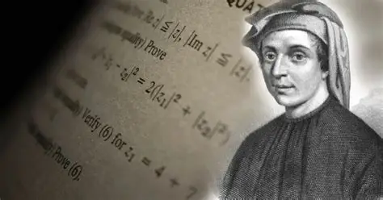
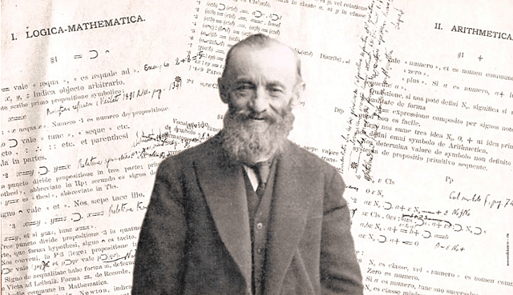

Os 10 nomes mais importantes da história da aritmética (ordem cronológica)
Pitágoras (c. 570–495 a.C.)

Pitágoras nasceu na ilha de Samos, na Grécia Antiga, e fundou uma escola filosófica e matemática no sul da Itália. Para sua escola, os números não eram apenas ferramentas de cálculo, mas a base de toda a realidade.
- Principais contribuições para a aritmética:
- Foi um dos primeiros a estudar números de forma sistemática.
- Classificou números em categorias como:
- números pares;
- números ímpares;
- números primos;
- números perfeitos.
- Estudou relações proporcionais e harmônicas entre números.
Um dos maiores legados dos pitagóricos foi perceber que a matemática podia explicar fenômenos naturais, como sons musicais e proporções geométricas.
Impacto histórico:
Pitágoras ajudou a transformar a aritmética de uma ferramenta prática de comércio em uma ciência teórica. Muitos conceitos da teoria dos números começaram com sua escola.
Euclides (c. 325–265 a.C.)

Euclides viveu em Alexandria, no Egito, e escreveu uma das obras mais importantes da história da matemática: Os Elementos.
Contribuições para a aritmética:
Embora seja mais conhecido pela geometria, nos livros VII, VIII e IX de Os Elementos, Euclides desenvolveu conceitos fundamentais da aritmética:
- algoritmo de Euclides (para encontrar o máximo divisor comum);
- estudo dos números primos;
- divisibilidade entre números;
- progressões numéricas.
Impacto histórico: Seu método lógico e organizado influenciou o ensino da matemática por mais de 2 mil anos. O algoritmo de Euclides ainda é usado em matemática e computação.
Arquimedes (c. 287–212 a.C.)

Arquimedes foi um dos maiores gênios da Antiguidade.
Contribuições para a aritmética:
- Criou métodos avançados para trabalhar com números muito grandes.
- Desenvolveu técnicas de aproximação numérica.
- Melhorou métodos de multiplicação e cálculo.
O Contador de Areia: Uma de suas obras mais famosas, O Contador de Areia, mostrou como representar números extremamente grandes — algo revolucionário para a época.
Impacto histórico:
Expandiu os limites da aritmética e mostrou que números poderiam ser usados em escalas praticamente ilimitadas.
Aryabhata (476–550)

Aryabhata foi um dos maiores matemáticos da Índia antiga.
Contribuições para a aritmética:
- Fortaleceu o sistema decimal posicional.
- Desenvolveu métodos rápidos de cálculo.
- Trabalhou com aproximações numéricas muito precisas.
- Também apresentou um valor extremamente preciso para π (pi): aproximadamente 3,1416.
Impacto histórico:
Seu trabalho ajudou a consolidar o sistema numérico que usamos hoje. Sua influência se espalhou para o mundo árabe e depois para a Europa.
Brahmagupta (598–668)
Brahmagupta é considerado um dos maiores revolucionários da aritmética.
- Principais contribuições: Foi o primeiro a definir regras formais para: O zero: Exemplo: 5 + 0 = 5 5 − 0 = 5
- Números negativos: Exemplo: dívida = número negativo; lucro = número positivo. Isso tornou os cálculos muito mais avançados.
- Impacto histórico: Sem Brahmagupta, a matemática moderna, a contabilidade e até a computação seriam muito diferentes.
Leonardo Fibonacci (c. 1170–1250)

Fibonacci viajou pelo norte da África e aprendeu matemática árabe.
Contribuições para a aritmética:
Em seu livro Liber Abaci (1202), apresentou aos europeus:
- o sistema decimal;
- o uso do zero;
- técnicas comerciais de cálculo.
Impacto histórico:
Mudou o comércio europeu e acelerou o desenvolvimento financeiro, bancário e científico.
Blaise Pascal (1623–1662)

Pascal foi um prodígio matemático.
Contribuições para a aritmética:
Criou a Pascaline, uma das primeiras calculadoras mecânicas da história.
Ela realizava:
- adições;
- subtrações automáticas.
Impacto histórico:
Foi um passo essencial para a criação das calculadoras modernas e computadores.
Gottfried Wilhelm Leibniz (1646–1716)
Peano levou a aritmética para um nível totalmente lógico e formal.
Contribuições:
- Criou os Axiomas de Peano, que definem formalmente os números naturais: 0, 1, 2, 3, 4...
- Esses axiomas explicam matematicamente:
- sucessores;
- adição;
- multiplicação;
- propriedades dos números.
Impacto histórico:
Sua formalização é usada até hoje em: matemática pura; lógica matemática; ciência da computação; inteligência artificial. A aritmética moderna se apoia diretamente em seus estudos.
Giuseppe Peano (1858–1932)

Giuseppe Peano foi um matemático italiano responsável por dar uma base lógica e formal à aritmética moderna.
Contribuições para a aritmética:
- Criou os Axiomas de Peano, que definem formalmente os números naturais (0, 1, 2, 3...).
- Esses axiomas descrevem regras fundamentais como:
- o conceito de número sucessor;
- a definição de adição;
- a definição de multiplicação;
- a estrutura lógica dos números naturais.
- Transformou a aritmética em um sistema totalmente lógico e rigoroso.
Impacto histórico:
O trabalho de Peano é essencial para a matemática moderna e para a computação. Seus axiomas são usados como base em lógica matemática, teoria dos números e ciência da computação.